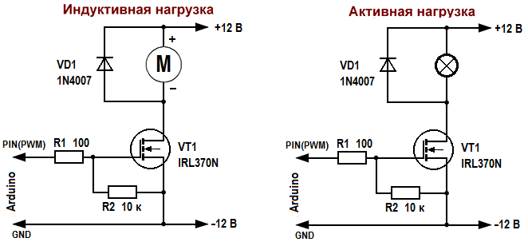

Подключение мощной нагрузки
к Arduino UNO
Часто с помощью Arduino UNO нужно управлять более мощной нагрузкой, такой как лампа накаливания, электродвигатель, электромагнит и т.п. Выходы Arduino не могут обеспечить питание столь мощной нагрузки и большого напряжения. К примеру в робототехнике, часто используются двигателя на 12 В, 24 В, 36 В и т.п. К тому же выходной ток вывода Arduino ограничен как правило 40 мА.
Одним из способов управления мощной нагрузкой, является использование MOSFET-транзисторов. Это дает возможность подключать достаточно мощную нагрузку с напряжением питания по 40-50 В и более и токами в несколько ампер, скажем электрические двигатели, электромагниты, галогенки и так далее.

Рис. 1 - Подключение нагрузки к Arduino через MOSFET-транзистор
Если нагрузка индуктивная (электродвигатель, электромагнитный клапан и т.д.), то рекомендуется ставить защитный диод, который защитит MOSFET-транзистор от напряжения самоиндукции. Если вы управляете электродвигателем при помощи ШИМ без защитного диода, то могут возникнуть такие проблемы, как нагрев MOSFET-транзистора или его вылет, медленно будет крутиться ваш двигатель, возникнут потери мощности и т.д. Так что всегда ставьте защитный диод для индуктивной нагрузки. Встроенный в MOSFET-транзистор защитный диод в большинстве случаев не спасает от индуктивных выбросов!
Если нагрузка у вас активная – светодиод, галогенная лампа, нагревательный элемент и т.д., то в этом случае диод не нужен.
В цепь затвора желательно поставить Pull-Down резистор (стягивающий резистор между затвором и истоком). Он необходим, чтобы гарантированно удерживать низкий уровень на затворе мосфета при отсутствии сигнала высокого уровня от Ардуино. Это исключает самопроизвольное включение транзистора.
В разрыв цепи затвора также рекомендуется ставить резистор номиналом 50-150 Ом, для предотвращения кратковременных выбросов тока и защиты вывода микроконтроллера.
При подборе MOSFET-транзистора, для того, чтобы он напрямую открывался от микроконтроллера и не нужно было ставить перед ним биполярных транзисторов и драйверов, обращайте внимание на параметр Gate Threshold, который должен быть примерно от 1 до 4 В. Часто такие транзисторы помечаются как Logic Level.
Давайте к примеру рассмотрим транзистор IRL3705N. Данный транзистор способен выдерживать продолжительный ток до 89 А (с теплоотводом) и открывается при напряжении затвора 1 В (параметр VGS(th)). Поэтому, мы можем напрямую подсоединить данный транзистор к выводам Arduino. Когда транзистор полностью открыт, сопротивление исток-сток (параметр RDS(on)) всего 0,01 Ом . Поэтому, если к нему подключить электрический мотор 12 В, 10 А на транзисторе падение напряжения будет всего лишь 0,1 В, а рассеиваемая мощность 1 Вт.
Если использовать ШИМ-выход контроллера, можно управлять мощностью (а значит и скоростью вращения) мотора.